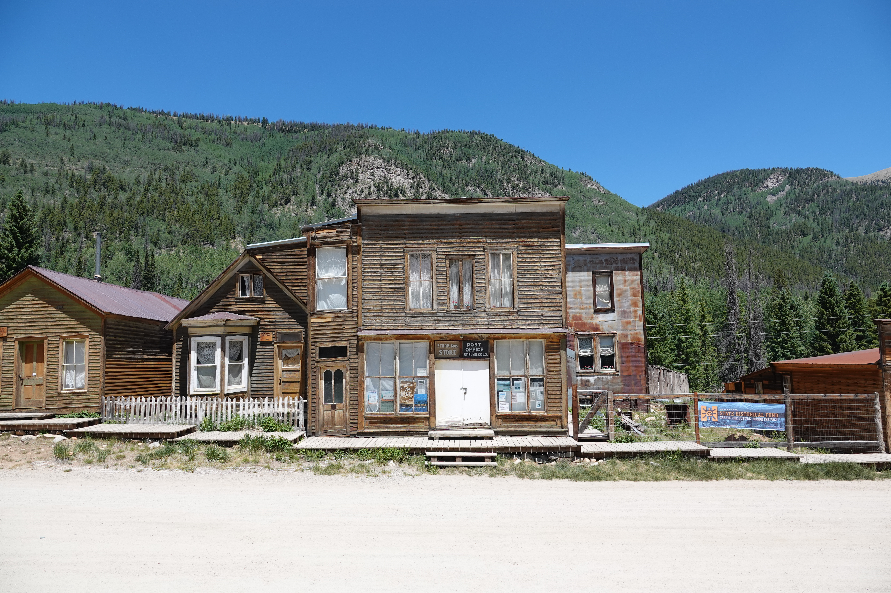
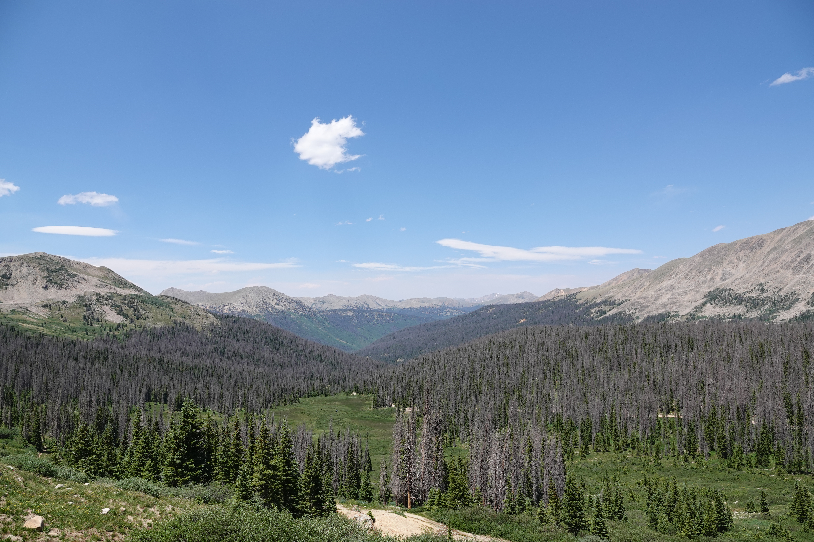
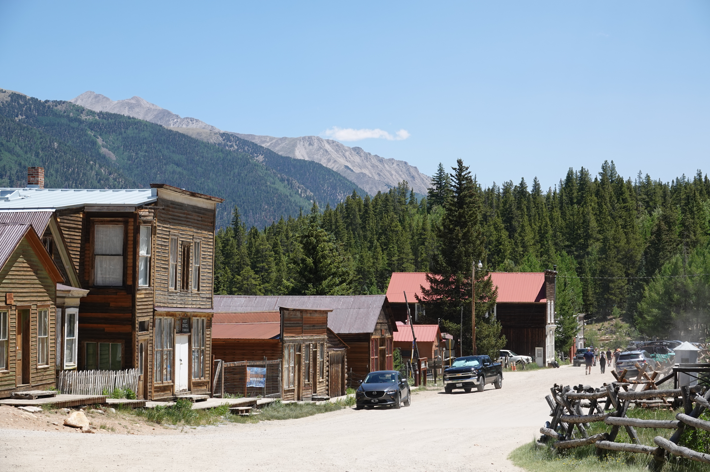
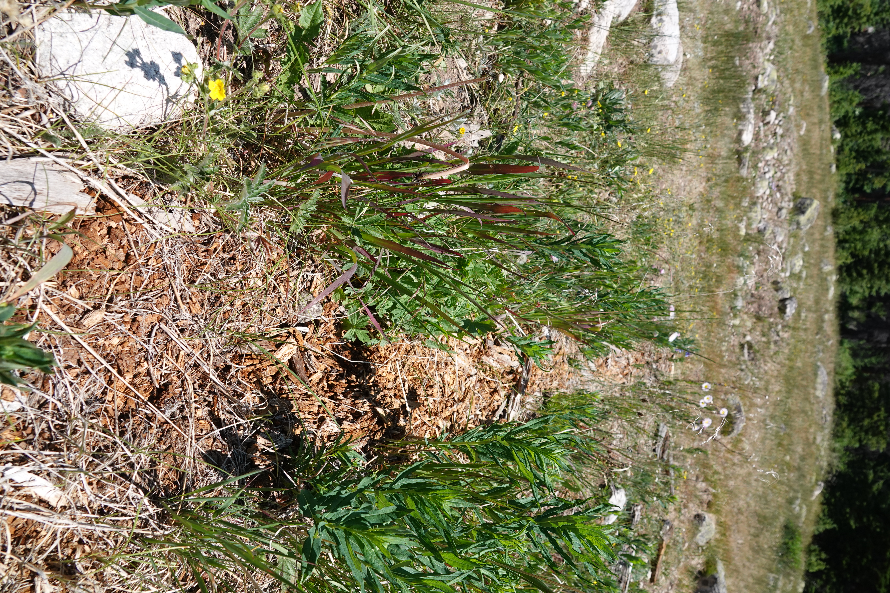
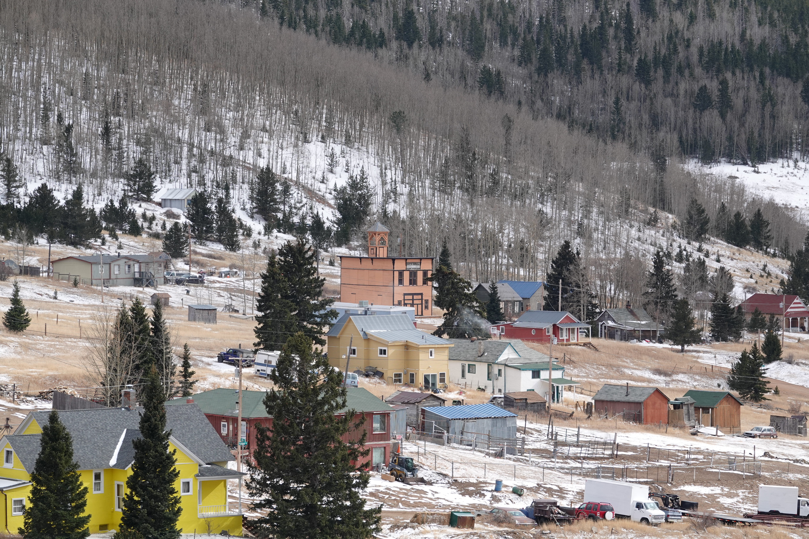
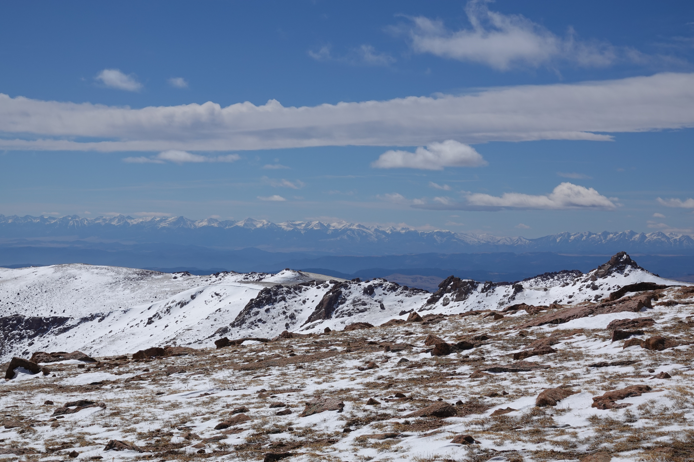
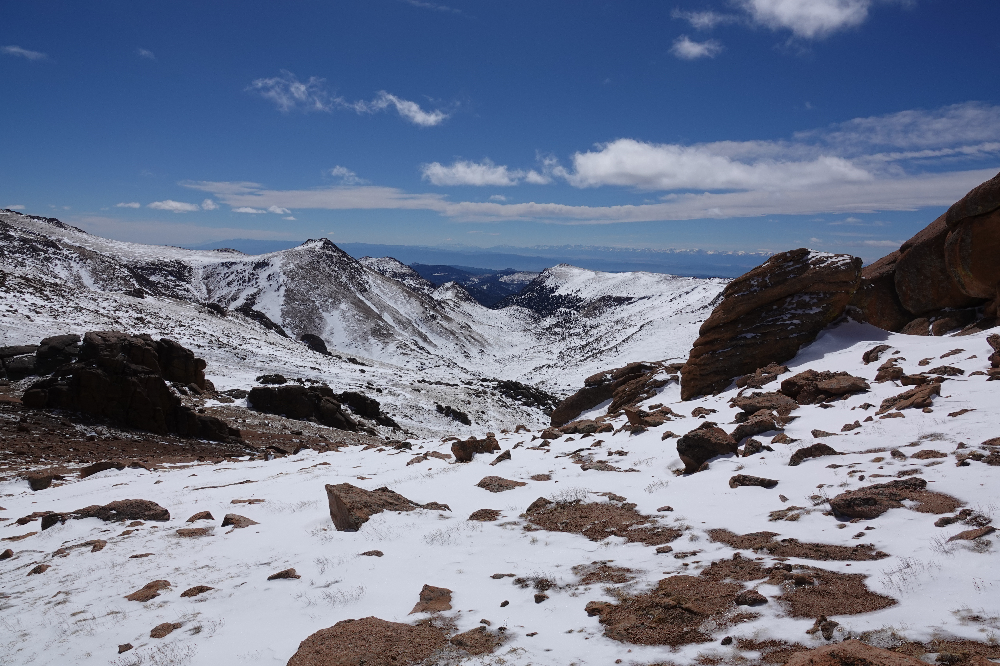
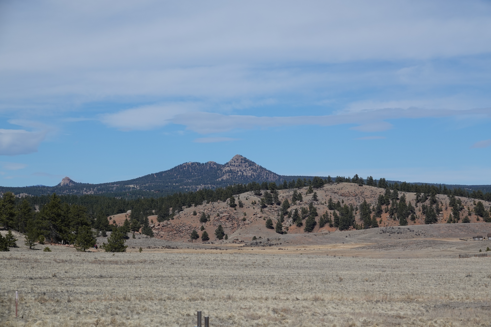

I was born in Colorado Springs, and visit Colorado quite often since my family still lives there! Here are
some of my favorite pictures from Colorado.

The ghost town of St. Elmo in Chaffee County

The view from the road to Hancock Pass.

Another angle of St. Elmo.

A log being reclaimed by nature. It is part of the foundation of the Saloon in Hancock, Colorado.
It is the only building remaining of a once booming mining town.

The town of Goldfield, South of Victor.

The view from Devil's Playground, near the summit of Pike's Peak.

Another view of Devil's Playground.

Crystal Peak as seen from Florissant Fossil Beds in Teller County.